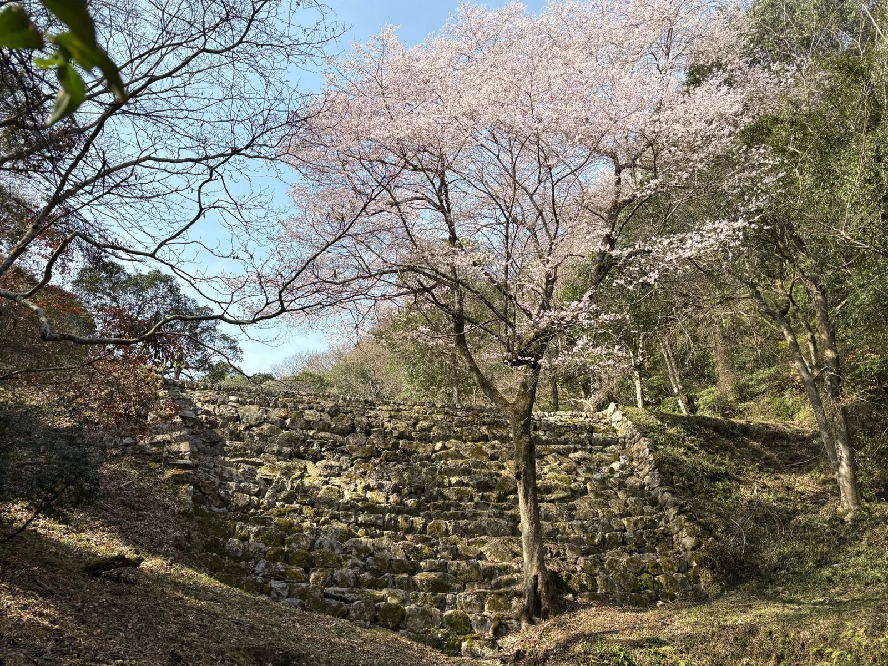

歴史的防災施設 × 地域防災現地写真
PROJECT 01修士研究｜成果公表
地域防災活動と住民の防災意識・行動
歴史的防災施設「砂留」の住民主体の保全活動を対象に、活動の認知・賛同と、地域住民の防災意識・行動との関連を検討した研究。
研究内容と分析方法
砂留の認知や保全活動への賛同と、住民の防災意識・行動の関係を住民アンケートに基づき分析しました。認知・価値評価・賛同等の関連構造を構造方程式モデリング（SEM）などで検討しています。
住民アンケートSEM防災意識・行動地域防災